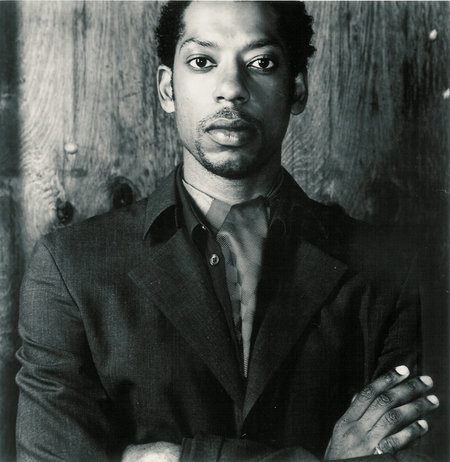
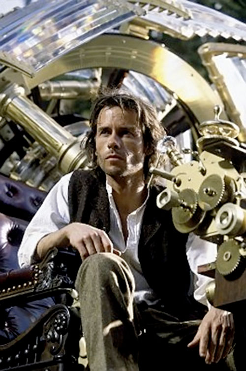

Why I love it
- Nice quotes: "We all have our time machines, don't we. Those that take us back are memories... And those that carry us forward, are dreams"
- The film delves deeply into themes of honor, courage, and destiny
- Good to watch with kids
Favorite actor
Orlando Jones (starred as Vox)
Protagonist
Alexander Hartdegen (performed by Guy Pearce)
